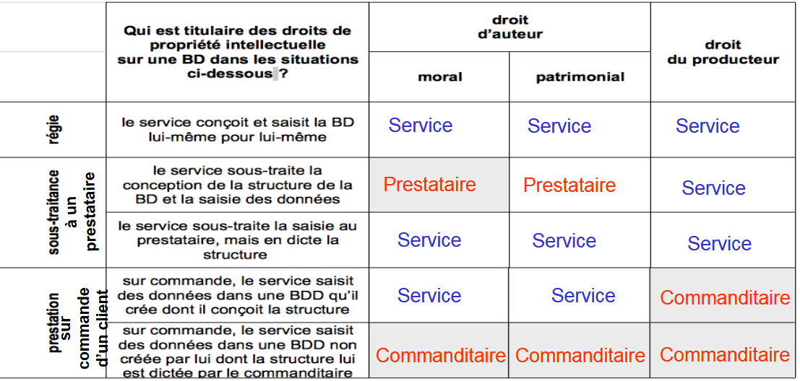

Révisions QCM¶
Glossaire¶
- LAQ : Limite d'Acceptation de la Qualité
- CRPA : Code des Relations entre le Public et les Administrations
- Convention d'Aarhus : limite les restrictions de diffusion pour les données liées à l'environnement
- CNIG : Conseil National de l'Information Géolocalisée
- CNIL : Commission Nationale Informatique et Libertés (application du RGPD)
- Anonymisation : prouver que la ré-identification est d'un coût supérieur à la valeur de la donnée
- DPD : Délégué à la Protection des Données (conseille et contrôle le responsable du traitement)
- Spécification de qualité : niveau d'erreur acceptable dans la BDD par rapport au terrain nominal (décrit par les spécifications de contenu)
- FAIR (OGC) : Findable, Accessible, Interoperable, Reusable
- WAL : journaux de transaction dans une BDD
Bases de données¶
BDD de série chronologique¶
- Prometheus
- InfluxDB
BDD orientée document¶
- CouchDB
- MongoDB
Moteur de recherche¶
- Elastic Search
- Meilisearch
BDD clé/valeur¶
- Redis
SGBDR¶
- Postgresql / PostGIS
- Sqlite / Spatialite
Qualité des données¶
- Normes métadonnées : ISO 19115 (normalisation du contenu) & ISO 19139 (normalisation de la forme : format XML, ...)
- Norme qualité : ISO 19157
Norme ISO 19157¶
Exhaustivité¶
- excédent
- omission
Qualité temporelle¶
- exactitude
- cohérence
- validité
Cogérence logique¶
- cohérence conceptuelle
- domaines de valeur
- format
- cohérence topologique
Précision thématique¶
- justesse des attributs qualitatifs
- précision des attributs quantitatifs
Précision de position¶
- Méthodes d'échantillonage : nombre d'objets, surface couverte, emplacement
- Stratégies d'échantillonage : déterministe ou probabiliste
Cycle de vie de la donnée spatiale¶
1. Plannification¶
- PAQ
2. Acquisition¶
3. Vérification¶
- ETL
- Modeleur graphique
- ...
4. Validation¶
- Qualité
5. Réutilisation¶
- Mise à jour
- Diffusion (serveur carto, serveur web, client carto)
6. Archives¶
- Catalogue de données
Juridique¶
INSPIRE & géostandards du CNIG¶
- métadonnées
- harmonisation des données
- interopérabilité (normalisation MCD)
Restrictions de diffusion¶
- droits d'auteur (droits moraux, droits patrimoniaux/financiers)
- droit de producteur de base de donnée (prise de l'initiative et du risque des investissements)

Licences¶
- Licence ouverte : Etalab (toutes les BDD IGN sauf SCAN)
- Licence ODbL (Open Database License) : BDD et bases dérivées d'une base ODbL mais ne s'applique pas aux oeuvres dérivées (cartes,...)
- Licence CC-BY-SA 4.0 : BDD et produits dérivés
Métadonnées¶
- Généalogie (source, histoire et cycle de vie de la donnée)
- Propos (raison de création, usages prévus)
- Usage (applications possibles)
- Echelle d'utilisation
- Actualité (date de création ou mise à jour)
Normes¶
Une norme n'est pas en soi une obligation mais une loi peut la rendre obligatoire
ESRI¶
Hiérarchie des utilisateurs d'une base de données spatiales¶
1. DBA (sys, sa, postgres)¶
2. Geodatabase administrator (sde)¶
3. Data Owner¶
4. Data User¶
Processus de connexion à une gdb d'entreprise¶
- Création gdb entreprise
- Connexion Admin SDE
- Création utilisateur (Data Owner)
- Connexion pour chaque utilisateur
IGN¶
Géoplateforme : moteur et infrastructure
Cartes.gouv : interface utilisateur, accès unifié aux fonctionnalités de la Géoplateforme¶
- consulter et utiliser les géodonnées
- créer des cartes (Macarte)
- stocker, traiter et partager les géodonnées
- espace collaboratif
Métadonnées¶
- Référence de temps et de localisation (système de coordonnées, type de géométrie)
- Conditions d'accès et modalités d'utilisation
- Conditions et objectifs de la collecte
- Origine des données et identité du créateur
Simplifier le partage des données¶
- La diffusion est normalisée avec le standard CSW (Catalog Service for the Web)
- Le format DCAT permet une normalisation pour le Web et pour se diriger vers un Web sémantique
- Format XML (ISO 19139)
Catalogage¶
- GeoNetwork (diffusion d'un catalogue CSW)
- CKAN : Comprehensive Knowledge Archive Network (très utilisé pour les portails Open Data)
Interopérabilité en géomatique¶
- Format d'échange normalisé : GML (Geography Markup Language)
- Standards et spécifications : OGC (Open Geospatial Consortium) -- notamment des standards sur les API (OGC API)
- Directives et recommandations : INSPIRE , ...
- Partenariats et collaborations public/privé
Web Services¶
Données mises à disposition par un serveur cartographique (Geoserver, Mapserver...) et directement lues sur navigateur web grâce à un client cartographique (OpenLayers, Leaflet...) ou sur un logiciel SIG desktop.
- WMS
- WMTS
- WFS : Web Feature Service
- WCS : Web Coverage Service
- CS-W : Catalog Service Web
- WPS : Web Processing Service
GetCapabilities : retourne les métadonnées du service (couches proposées, projections associées, auteur…)
Spatial ETL¶
- Reprojection
- Transformations spatiales
- Transformations topologiques
- Re-symbolisation
- Géocodage
Administration de base de données¶
1. Etablir les caractéristiques de la base
2. Evaluation du matériel du serveur
3. Installation du logiciel PostgreSQL (serveur et client)
4. Créer et ouvrir la base de données
- Création d'un groupe de bases de données appelé CLUSTER (= instance)
- Définition des TABLESPACES à l'intérieur du répertoire
5. Stratégie de sauvegarde de la BDD
- sauv. manuelle avec pg_dump
- sauv. automatisée par script
→ Journaux de transactions appelés WAL
6. Créer et gérer les utilisateurs et leurs droits d'accès
→ Limite max du nombre d'utilisateurs dans le fichier 'postgresql.conf'
7. Implémenter la base
→ Imaginer une phase de maintenance/test avant la mise en production.
8. Sauvegarde de base de données fonctionnelle
9. Optimiser les performances de la base
→ PGTune
Binaires pour la sauvegarde :¶
- pg_dump (sauvegarde d'une instance, différents formats, différents niveaux d'objets)
- pg_dumpall (sauvagarde également les rôles)
- pg_restore (à partir d'un pg_dumpall)
Tablespaces¶
Un tablespace est un espace de stockage dans lequel des données composant les bases de données peuvent être enregistrées. Il fournit une couche d'abstraction entre les données logiques et les données physiques
Maintenance¶
Vacuum permet de récupérer l'espace occupé par les lignes supprimées.
Le VACCUM standard (sans FULL) récupère simplement l'espace et le rend disponible pour une réutilisation. Cette forme de la commande peut opérer en parallèle avec les opérations normales de lecture et d'écriture de la table, car elle n'utilise pas de verrou exclusif.
VACCUM FULL fait un traitement plus complet et, en particulier, déplace des lignes dans d'autres blocs pour compacter la table au maximum sur le disque. Cette forme est beaucoup plus lente et pose un verrou exclusif sur la table pour faire son traitement.
Gestion des rôles¶
- rôle de groupe (NOLOGIN)
- rôle de connexion ou utilisateur (LOGIN)
Privilèges¶
Règle n°0 : un mot de passe pour chacun
Tous les utilisateurs (clients, applications) doivent avoir un mot de passe.
Règle n°1 : attribution du moindre privilège.
Les utilisateurs ne doivent avoir que le minimum de droits, ceux strictement nécessaires à l'accomplissement de leurs tâches. Les privilèges peuvent évoluer au cours du temps car les besoins et les tâches affectées ne sont pas immuables, mais à un moment donné, seuls les droits indispensables doivent être fournis à un utilisateur.
Il faut éviter de créer plusieurs comptes avec des droits d'administrateur.
Règle n°2 : contrôle de la population.
Le personnel d'une entreprise bouge, il y a des départs, des arrivées, des promotions... Les privilèges doivent êtres synchrones avec la réalité de la population : il faut supprimer les comptes des utilisateurs quittant l'entreprise et de ceux n'étant plus affectés à telle ou telle tâche.
Règle n°3 : supervision de la délégation des tâches d'administration.
Un administrateur peut être amené à déléguer auprès d'une autre personne les tâches d'attribution des privilèges de tout ou partie de la population des utilisateurs (cf WITH GRANT OPTION). Un contrôle a posteriori doit être réalisé afin de vérifier que le résultat de cette délégation est conforme à la politique adoptée.
Règle n°4 : contrôle physique des connexions.
La connexion d'un utilisateur à une base de données peut être réalisée depuis n'importe où dans le monde grâce à Internet. Il est nécessaire de restreindre les connexions à des hôtes spécifiques connus (hba_conf).